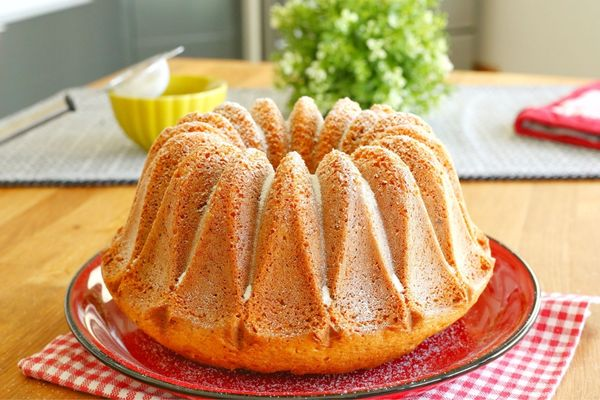
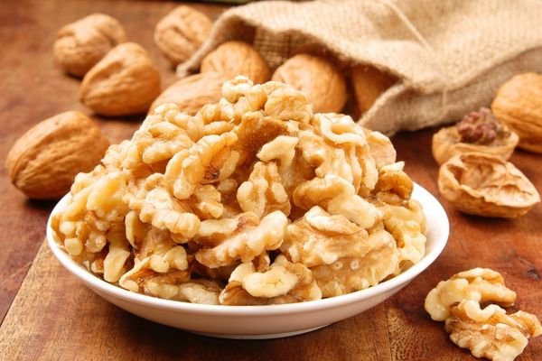
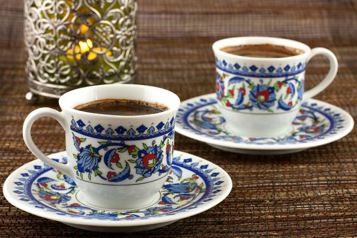

Kek Yapmanın Sırları
by admin / 13 nis, 2024

Cevizlerin Sağlığa Faydaları
by admin / 15 nis, 2024

Kahvenin Yükselen Ruhu
by admin / 13 nis, 2024

Bir Şefin Kimseyle Paylaşmadığı 14 Sır Püf Noktası
by admin / 17 haz, 2024

Kanser Riskini Azaltarak Daha Sağlıklı Bir Hayat Sunan 10 Kahraman Yiyecek
by admin / 15 nis, 2024

Karbonhidrat Hangi Besinlerde Bulunur, Faydaları Nelerdir?
by admin / 13 nis, 2024

Her Akşam Bir Bardak İçmeli: Havuç Suyunun Faydaları
by admin / 17 haz, 2024

Bilmeyen Kalmasın: Domates Meyve mi Sebze mi?
by admin / 15 nis, 2024

"Trabzon Hurması Neye İyi Gelir?" Diyenlere: Cennet Hurması Faydaları
by admin / 13 nis, 2024